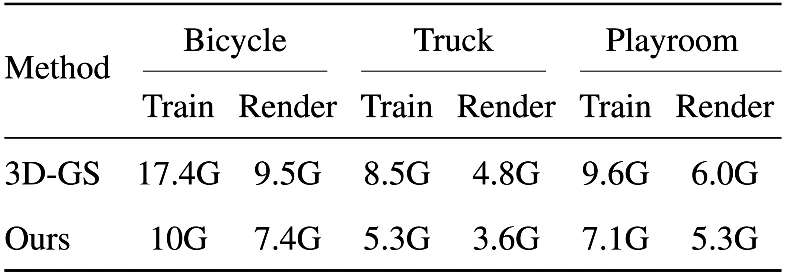

Accelerated training
Our method achieves better reconstruction quality early into training compared to 3D-GS and converges faster achieving similar quality.
Qualitative Comparisons

We show qualitative results on various scenes from the MipNeRF dataset. Fast NeRF methods such as Instant-NGP and Plenoxels produce blurry results. Mip-NeRF360, while producing sharp results, is extremely slow to train and render. 3D-GS on the other hand has floaters at the boundaries of the scene due to ill-optimized Gaussians. Our method reconstructs the scene with fine details with fewer artifacts while also being much smaller and faster.
GPU Memory Usage
